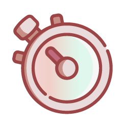
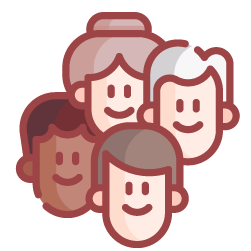

Política de Saúde para povos ciganos: marcos legais no Ministério da Saúde
Espera-se que ao final da aula o discente tenha conhecimento sobre Política de Saúde para povos ciganos, bem como os marcos legais no MS.
- Compreender os fundamentos da Política de Saúde para os povos ciganos no Brasil e reconhecer sua relação com os princípios do SUS (integralidade, equidade e participação social).
- Identificar os principais marcos legais e normativos que orientam a atenção à saúde dos povos ciganos, incluindo decretos, portarias e planos nacionais.
- Analisar os desafios e barreiras de acesso enfrentados pelos povos ciganos nos serviços de saúde, relacionando-os às desigualdades históricas, culturais e institucionais.
Ciganos, Brasil e Saúde
Atualmente, no Brasil, existe ciganos de diferentes troncos étnicos, como os Rom, os Sinti e os Calon; espalhados por todo o território nacional. Cada um desses troncos expressa sua identidade considerando as características:


O Brasil, por ser um país que apresenta uma diversidade cultural, étnica e racial, enfrenta vários desafios para assegurar os direitos para promoção do bem-estar social da nação, principalmente dos povos e comunidades tradicionais. Conforme o artigo 3º, §1° do Decreto de n.º 6.040/2007, as Comunidades Tradicionais dizem respeito aos:
"[...] grupos culturalmente diferenciados e que se reconhecem como tais, que possuem formas próprias de organização social, que ocupam e usam territórios e recursos naturais como condição para sua reprodução cultural, social, religiosa, ancestral e econômica, utilizando conhecimentos, inovações e práticas gerados e transmitidos pela tradição (Brasil, 2007)."
De acordo com o governo Federal, tal decreto assegura a autodeclaração de identidades e direitos próprios. Embora se diferenciem por aspectos culturais, estilos de vida, tradições etc., os povos e comunidades tradicionais vivem em situação de desvantagens sociais e políticas. Amorim e Silva Júnior (2022) apontam que os povos ciganos estão entre os povos e comunidades tradicionais do Brasil, reconhecendo-os enquanto tal, por meio do Decreto nº 6.040 de 2007, em destaque ao fato de que esses grupos apresentam historicamente uma conexão de identidades bem como culturas intimamente.
Embora existam marcos legais importantes, ao compararmos o volume de produções acadêmicas relacionadas a povos indígenas e populações negras com a literatura dedicada aos povos ciganos, em âmbito nacional, observamos que essa ainda é limitada, apesar do crescimento significativo registrado a partir dos anos 2000.
A falta de dados sobre a distribuição dos ciganos no território nacional, suas condições de vida e diversidade são fatores que dificultam a implementação de políticas públicas específicas, evidenciando o quão invisibilizados continuam diante do Estado brasileiro. Uma evidência desse descaso pode ser observada nos censos demográficos realizados pelo Instituto Brasileira de Geografia e Estatística (IBGE) que nunca incluiu os povos ciganos nos dados censitários, apontando uma exclusão desses grupos.
Breves considerações sobre o Sistema Único de Saúde (SUS)
O Sistema Único de Saúde (SUS) foi constituído pela Constituição Federal (CF) de 1988, sendo consolidado pelas Leis Federais n.º 8.080 e n.º 8.142, ambas do ano de 1990; fruto de muitas lutas dos movimentos sociais e da Reforma Sanitária ocorrida nessa década. Esse sistema aplica suas ações de assistência à população por intermédio da promoção, proteção e recuperação da saúde e da organização o funcionamento dos serviços correspondentes e dá outras providências. Organiza-se com base em princípios fundamentais que garantem a saúde como um direito universal e um dever do Estado. Entre os mais destacados estão a participação social, a integralidade e a equidade, pilares que asseguram uma abordagem ampla, democrática e justa na formulação e execução das políticas públicas de saúde. Entenda cada um dos princípios a seguir:
A participação social é um princípio estruturante do SUS e assegura que a população esteja ativamente envolvida no planejamento, acompanhamento e avaliação das políticas de saúde. Isso ocorre por meio de Conselhos e Conferências de Saúde, que reúnem gestores, trabalhadores e usuários, promovendo controle social e transparência. Esses espaços são fundamentais para a democratização da gestão, permitindo que as decisões reflitam as necessidades locais, regionais e nacionais.
A participação social contribui para a construção de políticas de saúde mais representativas e inclusivas, garantindo que diferentes segmentos da sociedade sejam ouvidos e que as decisões tenham legitimidade. É uma forma de consolidar o caráter público e cidadão do SUS.
A integralidade é um dos princípios éticos e organizativos do SUS, norteando a oferta de cuidados que considerem o indivíduo em sua totalidade, indo além do aspecto biológico e abrangendo dimensões sociais, psicológicas e culturais. Ela exige que os serviços de saúde sejam organizados de maneira a oferecer ações de promoção, prevenção, diagnóstico, tratamento e reabilitação, articulando os diferentes níveis de atenção (primária, secundária e terciária).
A integralidade é especialmente relevante para evitar a fragmentação do cuidado, garantindo que o paciente seja tratado como um todo e que suas necessidades sejam atendidas de forma coordenada e contínua, de acordo com o contexto em que está inserido.
A equidade, um dos princípios norteadores do SUS, refere-se à necessidade de tratar de maneira diferenciada aqueles que enfrentam maiores vulnerabilidades, buscando reduzir as desigualdades históricas e sociais no acesso aos serviços de saúde. Em outras palavras, trata-se de oferecer mais a quem mais precisa, reconhecendo as especificidades de grupos em situação de desvantagem.
Nesse sentido, o SUS implementa políticas específicas, como a Política Nacional de Promoção da Equidade em Saúde, que direciona ações voltadas a populações vulneráveis, incluindo comunidades indígenas, quilombolas, pessoas negras, LGBTQIAP+, trabalhadores rurais e pessoas em situação de rua. Essas iniciativas visam eliminar barreiras que dificultam o acesso a cuidados de saúde e garantir que os serviços sejam culturalmente sensíveis, territorialmente adequados e efetivamente acessíveis.
A relação entre participação social, integralidade e equidade é essencial para o funcionamento do SUS. A participação social fortalece o controle democrático e a construção de políticas inclusivas, enquanto a integralidade e a equidade garantem que essas políticas atendam às necessidades reais da população, com foco na justiça social. Essa integração reflete o compromisso do SUS com a promoção de uma saúde universal, integral e equitativa, atendendo ao preceito constitucional de que a saúde é um direito de todos e um dever do Estado.
A Constituição Federal e posteriormente a Lei Orgânica da Saúde, sob a égide da Lei n.º 8.080, de 19 de setembro de 1990, fortaleceram as discussões já existentes sobre a concepção de saúde. Nesse âmbito, compreende-se que saúde não se enquadra apenas na ausência de doença, mas considera, sobretudo, a qualidade de vida, derivado de outras políticas públicas que promovem a diminuição de desigualdades regionais e promovam desenvolvimento econômico e social.
Dessa forma, o SUS, em conjunto com outras políticas, visa promover a saúde, prevenindo a ocorrência de agravos e promovendo a recuperação dos pacientes (Brasil, 2013) Como nos aponta Paim (2018, p. 3):
"Apesar de a Constituição proclamar a saúde como direito de todos e dever do Estado, o Estado brasileiro através dos poderes executivo, legislativo e judiciário, não tem assegurado as condições objetivas para a sustentabilidade econômica e científico-tecnológica do SUS. Problemas de gestão como a falta de profissionalização, o uso clientelista e partidário dos estabelecimentos públicos, número excessivo de cargos de confiança, burocratização das decisões e descontinuidade administrativa, têm sido destacados, embora as alternativas acionadas impliquem a desvalorização dos trabalhadores de saúde, através das terceirizações e da precarização do trabalho."
A gestão das ações e serviços de saúde deve ser compassiva e participativa entre os três níveis da Federação: a União, os Estados e os Municípios. O art. 196 da CF/1988 consagrou a saúde como um “direito de todos e um dever do Estado”. Assim, a saúde dever ser assegurada pelas políticas econômicas e sociais para serem diminuídos os riscos de doenças, tendo o Estado como principal agente promotor e garante no intuito de recuperar a saúde da população (Brasil, 2013). É neste contexto que o Sistema Único de Saúde passou a ser a forma de acesso nacional à saúde no Brasil, saúde enquanto um direito social. A Lei nº 8.080/1990 estabelece os 21 princípios de universalidade de acesso, igualdade e integralidade da assistência, bem como a participação da sociedade e a descentralização político-administrativa do sistema. Estes princípios apregoam o acesso a todos os segmentos da população, independente de cor, etnia, gênero, religião ou região, priorizando um atendimento mais humano e equânime.
Dessa forma, entendemos o direito à saúde como um direito coletivo. Assim sendo, deve ser deliberado e construído a partir de práticas e saberes voltadas para a coletividade. Para que isso seja possível, é preciso que o Estado e os poderes públicos se dediquem a uma gestão eficiente, integrando o acesso da população ao direito fundamental à saúde e às formas de prevenção de doenças que envolvem não só o aspecto físico, mas também diz respeito às questões sociais, políticas e econômicas.
Marcos na Saúde para os ciganos
2016
Decreto n.º 10.841, de 25 de maio de 2006Reconhecimento oficial da criação do dia nacional do cigano (24 de maio). Mesmo dia da padroeira dos povos ciganos, Santa Sara Kali.
2009
Decreto 6.872, aprovou o Plano Nacional de Promoção da Igualdade Racial (PLANAPIR), realizando orientações específicas sobre a saúde dos ciganos.
2011
Portaria 940, do Ministério da Saúde, isentou os ciganos nômades e pessoas em situação de rua da obrigatoriedade ou necessidade de apresentar comprovante de residência ao solicitar cadastramento no sistema de saúde.
2016
Foi publicada a Cartilha “Subsídios para o cuidado à saúde dos povos ciganos” pelo Ministério da Saúde”, em conjunto com a Associação Internacional Maylê Sara Kali (AMSK/Brasil), com o objetivo de fornecer capacitação aos profissionais de saúde em relação à oferta de cuidados à saúde dos povos ciganos.
2018
Portaria MS 4.384, institui a Política Nacional de Atenção Integral à Saúde do Povo Cigano/Romani, que em seu art. 3º apresenta como objetivo geral promove a saúde integral do Povo Cigano/Romani, respeitando suas práticas, saberes e medicinas tradicionais; priorizando a redução e o combate à ciganofobia ou romafobia.
De acordo com Moonen (2011), desenvolveram-se em diferentes partes do mundo reações anticiganas ou anticiganismo, apontando os estereótipos negativos que prevalecem sobre as definições a respeito dos ciganos. Como forma de combate ao anticiganismos, aponta as organizações não governamentais, as lideranças ciganas e o movimento cigano que vem se articulando em diferentes países.
Desse modo, compreendemos que uma promoção de saúde integral minimiza o anticiganismo, isto é, uma ação educativa por meio da saúde. Embora existam ciganos em diferentes regiões do Brasil, muitos grupos e famílias ciganas vivenciam profundas exclusões sociais e muitas famílias ainda conviverem com a pobreza, o desemprego, a falta de saneamento básico, de políticas sanitárias e de saúde. Observamos que as comunidades ciganas não são contempladas com políticas e serviços públicos efetivamente, ferindo o princípio da equidade legalmente instituído, especialmente no que diz respeito à saúde, a parti das análises de Araújo; Moreira; Aguiar, 2013.
Além disso, não obtém, enquanto comunidade tradicional, o acesso pleno aos direitos fundamentais reconhecidos, tendo que recorrer ao SUS porque são muitas as dificuldades de inserção da etnia no modo de produção de saúde ensejado pelo sistema descentralizado de saúde. Destacamos que os profissionais de saúde incumbidos do atendimento à população cigana não recebem as informações necessárias para lidarem com suas especificidades culturais, não sendo raras as situações em que o tratamento é desrespeitoso e feito com desdém.
Salientamos que essas políticas também não consideram as especificidades internas em cada comunidade, em cada realidade dos grupos ciganos, onde muitas vezes há expectativas distintas nos papeis de gênero, desempenhados de forma distinta entre homens e mulheres. No caso aqui pesquisado, cabe às mulheres os cuidados da casa, dos filhos, da educação e da família.
Goldfarb, Leandro e Dias (2012) destacam a resistência de muitas mulheres ciganas em buscar os serviços de prevenção e as consultas de pré-natal nos postos de saúde ou nas equipes de Saúde da Família (ESF). Essa resistência ocorre, em grande parte, porque os atendimentos também são realizados por profissionais do sexo masculino, o que é considerado inaceitável para elas. Como observa Bonono (2010, p. 169), “no tecido social cigano, as relações de gênero são centrais na organização do modo de vida do grupo. A dinâmica entre os universos masculino e feminino, desde a infância até a vida adulta, regula e orienta o processo de identificação étnica pelas calins e calons. O aprendizado da lei cigana pelas crianças do grupo visa garantir a proteção contra o abandono da comunidade quando se tornarem adultos.”
Através do casamento, as crianças são inseridas na vida adulta da comunidade, garantindo o nascimento de novas famílias, de uma nova geração identificação de cada indivíduo em relação ao grupo étnico. A partir de uma perspectiva de dentro (meu olhar) e consoante Bonono (2010), notamos uma importância dos filhos para a reprodução familiar dos ciganos. Desse modo, a mulher tem um papel fundamental nessa organização social. Nem sempre as calins têm condições financeiras para fazer tratamentos e acompanhamento reprodutivo, ou na fase do puerpério. Isso faz com que contém apenas com o SUS, que na maioria das vezes não corresponde às expectativas culturais dessas mulheres no tempo e modo esperado; o que as afastam dos tratamentos necessários (Čvoroić; Coe, 2017).
Tal qual acontece na Sérvia e Macedônia, aqui no Brasil as mulheres ciganas enfrentam as piores condições de saúde, pelo fato de serem ciganas e também estão em situação de vulnerabilidade social. Além disso, a discriminação interpessoal se faz presente, o que nos leva a refletir sobre desrespeitos de diferentes ordens: econômica, de classes, étnicas e culturais (Janevic et al., 2017). Conquanto, o acesso à saúde pública e de qualidade seja um direito fundamental constitucional de todo cidadão ou cidadã brasileiro(a), membros de grupos étnicos, como os ciganos, permanecem vistos como cidadãos de “segunda ordem”.
Dessa maneira, a inclusão nas políticas de saúde permanece um desafio e uma luta constante, uma vez que a população cigana no Brasil continua sendo estigmatizada, invisibilizada e desconhecida, inclusive por aqueles que deveriam protegê-las ou assegurar o acolhimento.
O Projeto de Lei (PL) 1387/2022, conhecido como o Estatuto dos Povos Ciganos, tramita atualmente na Câmara dos Deputados e propõe um conjunto de diretrizes para garantir direitos fundamentais, promover a inclusão e combater a discriminação enfrentada pelos povos ciganos no Brasil.
O projeto aborda temas como:
Educação e Cultura: Garante o acesso à educação básica, a preservação das línguas ciganas como patrimônio cultural imaterial e a criação de espaços para promover a cultura cigana.
Saúde: Propõe medidas específicas para garantir o acesso aos serviços do SUS, incluindo sensibilização de profissionais e combate ao preconceito institucional.
Moradia e Terra: Destaca a inviolabilidade dos acampamentos como parte da tradição cultural cigana e incentiva políticas públicas para acesso à moradia e terras.
Trabalho: Prevê ações afirmativas para promover o acesso ao mercado de trabalho e ao crédito para atividades produtivas, com atenção às particularidades culturais.
Recentemente, foi assinado o Decreto nº 12.128, de 1º de agosto de 2024, que institui o Plano Nacional de Políticas para os Povos Ciganos. Seu objetivo é promover medidas intersetoriais que assegurem os direitos dessa população, fortalecendo sua cidadania e garantindo o acesso equitativo a serviços públicos essenciais.
No Art. 4º, o Plano estabelece uma série de objetivos, entre eles, o inciso V, que determina a importância de atender às especificidades dos povos ciganos nas políticas de atenção à saúde. Essa diretriz reconhece as particularidades culturais, sociais e territoriais do povo cigano, promovendo ações mais inclusivas e respeitosas.
Com a implementação desse Plano, espera-se ampliar o acesso aos serviços de saúde, educação e assistência social, além de valorizar a identidade cultural e fortalecer o protagonismo das comunidades ciganas. Trata-se de um passo importante para reduzir desigualdades históricas, combater o preconceito e garantir melhores condições de vida para o povo cigano no Brasil.